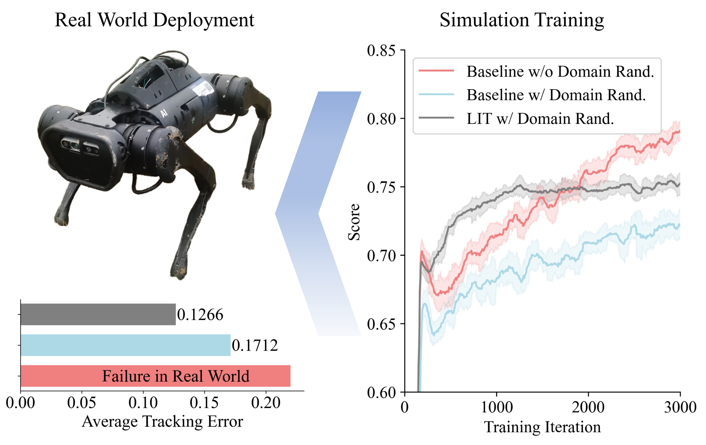
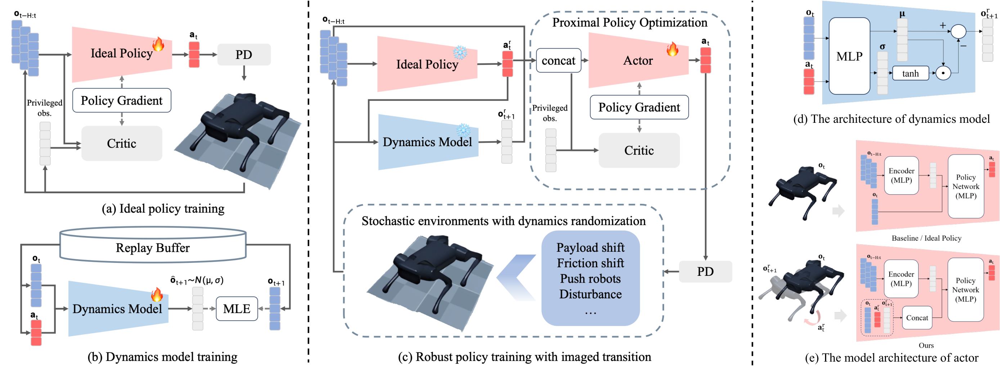
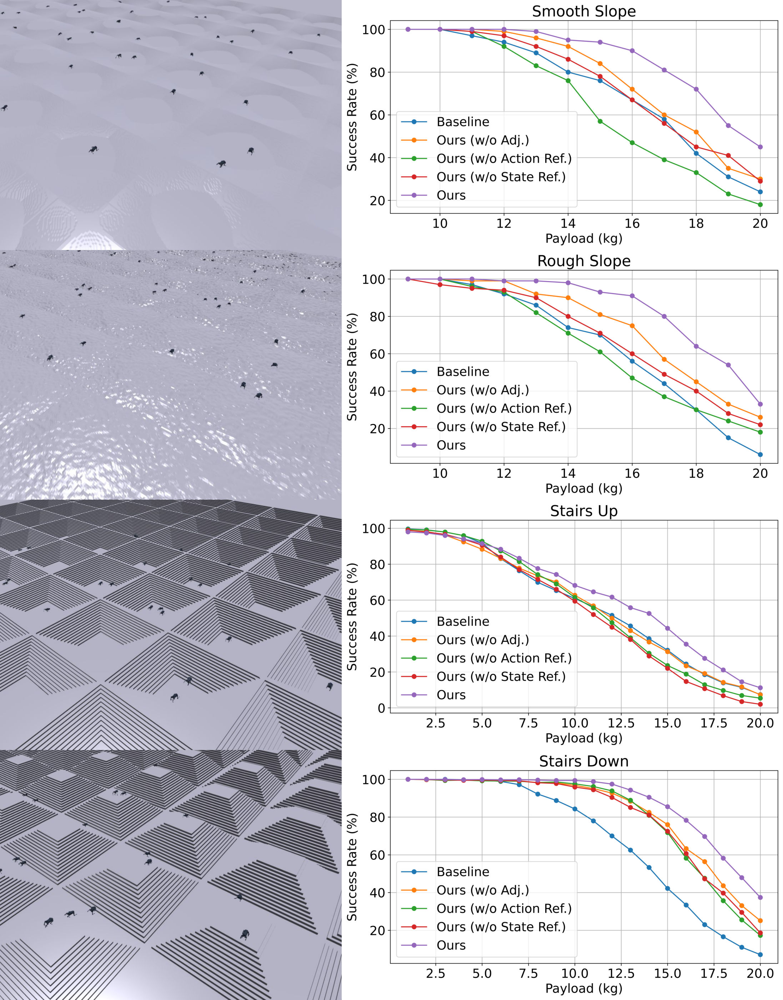
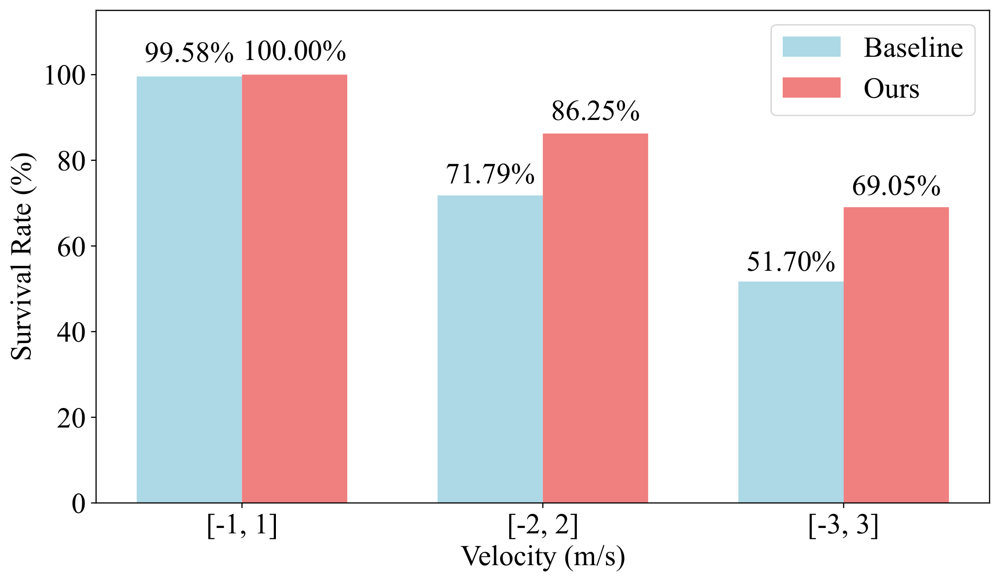
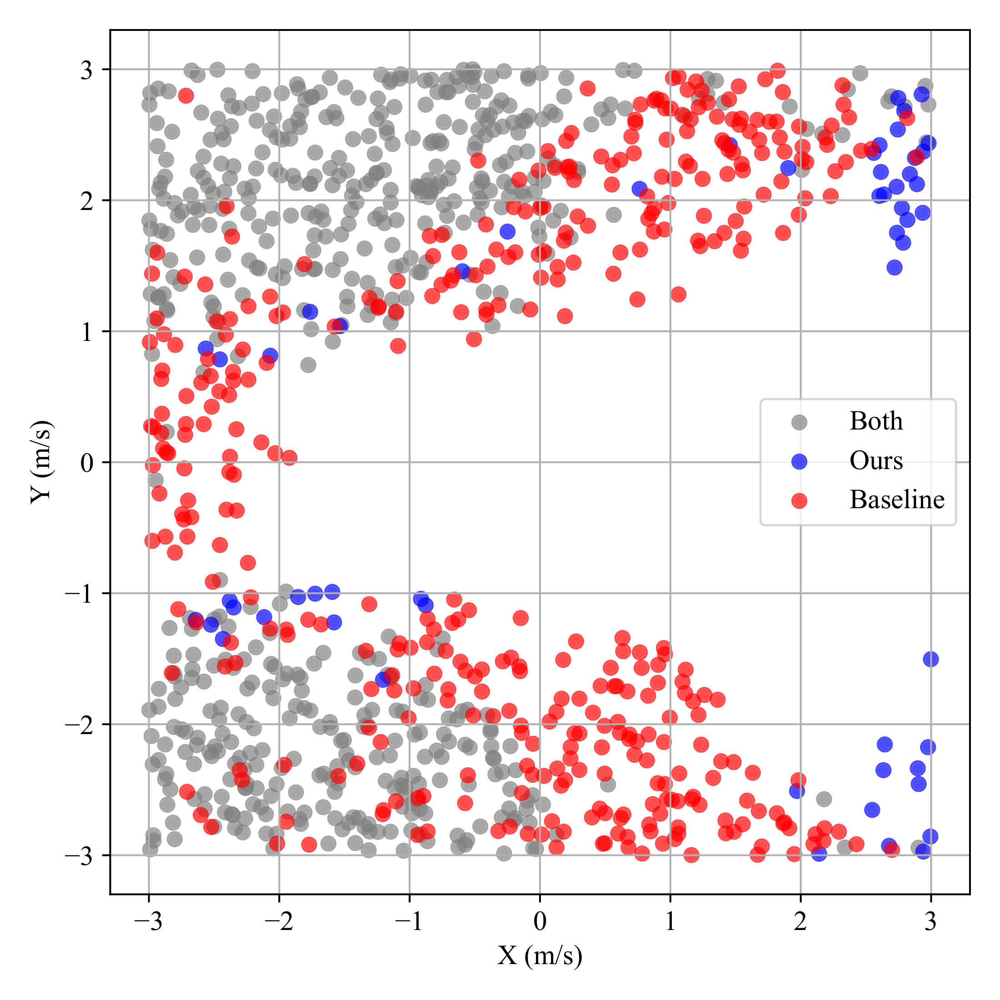
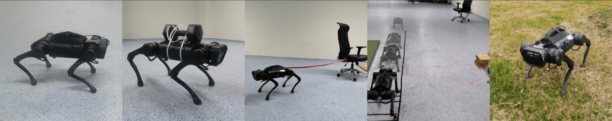
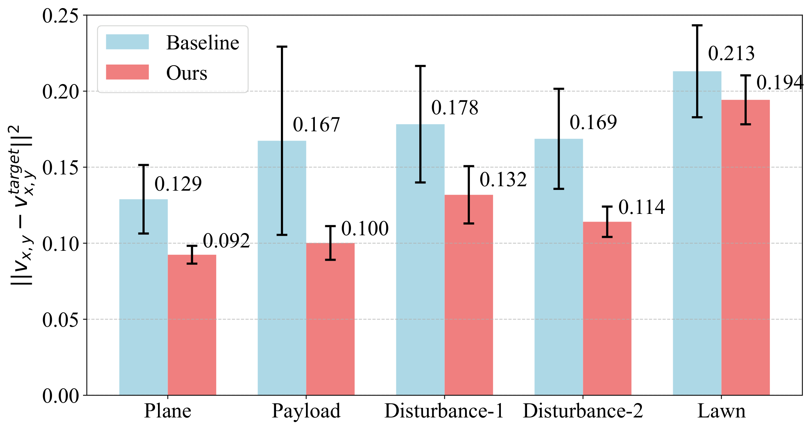
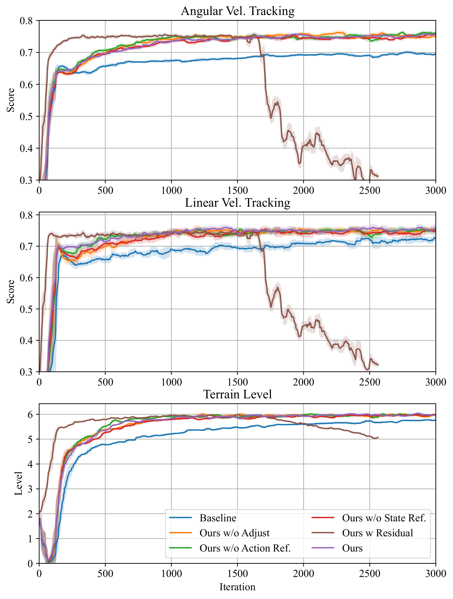

LIT · IEEE CASE 2026
Learning Robotic Policy with Imagined Transition
Mitigating the Trade-off between Robustness and Optimality
1 Westlake University 2 Nanjing University
Video
Simulation and real-world deployment with payload shifts, external disturbances, and uneven outdoor terrain. Watch on Bilibili ↗ if the embedded player is unavailable.
Abstract
Domain randomization improves sim-to-real robustness for quadrupedal locomotion, but it can also sacrifice optimality and lead to conservative behaviors. We propose LIT (Learning with Imagined Transition), a two-stage reinforcement learning framework that introduces explicit motion references into robust policy learning.
An ideal policy and a dynamics model are first trained in an undisturbed simulator to generate reference actions and imagined next observations. These imagined transitions guide the robust policy under domain randomization, while an uncertainty-based adjustment reduces the influence of unreliable model predictions. Experiments in simulation and on a real Unitree A1 show improvements in training efficiency, velocity tracking, and robustness under unseen disturbances.
Why motion references?
Robust quadrupedal locomotion policies are commonly trained with extensive domain randomization. Although this improves robustness, the learned policy may become overly conservative under nominal or mildly disturbed conditions. LIT provides explicit reference motions so the policy can preserve desired behavior while adapting to disturbances.

How LIT works
- Learn motion references in fixed dynamics.Train an ideal policy in a simulator without domain randomization. Learn a dynamics model that predicts the distribution of the next observation. Together they provide a reference action and an imagined next observation.
- Learn a robust policy with imagined transitions.Under domain randomization, give the policy the current observation, the reference action, and the imagined next observation. This imagined transition provides explicit guidance for the desired motion.
Model predictions can become unreliable outside the training distribution. LIT adjusts the imagined observation according to the model's uncertainty, reducing the influence of unreliable predictions during training and deployment.

Results
Command tracking in simulation
LIT lowers linear and angular velocity tracking errors across most tested terrain and velocity combinations. The one exception is angular velocity tracking on stairs.
| Terrain | Velocity | Baseline | LIT |
|---|---|---|---|
| Smooth slopes | Linear | 0.170 | 0.120 |
| Angular | 0.101 | 0.099 | |
| Rough slopes | Linear | 0.387 | 0.162 |
| Angular | 0.164 | 0.130 | |
| Stairs | Linear | 2.371 | 0.992 |
| Angular | 0.515 | 0.552 | |
| Discrete | Linear | 1.955 | 0.120 |
| Angular | 0.220 | 0.099 |
Robustness to payload shifts and pushes
Under unseen payload shifts and external push disturbances, LIT achieves higher survival rates than the baseline. Its advantage becomes more pronounced as disturbance magnitude increases.



Real-world deployment
We deploy LIT on a Unitree A1 in five scenarios: flat ground, an additional payload, two external disturbance settings, and lawn terrain. LIT achieves lower linear velocity tracking errors than the baseline in all five.


Learning curves
LIT improves normalized velocity tracking scores and terrain progression during training. The residual-action variant learns quickly at first but later becomes unstable, illustrating the need to handle unreliable imagined transitions.

Paper & citation
Read the camera-ready PDF or the arXiv preprint. The citation below refers to the arXiv version.
@misc{xiao2025lit,
title = {Learning Robotic Policy with Imagined Transition: Mitigating the Trade-off between Robustness and Optimality},
author = {Xiao, Wei and Lyu, Shangke and Gong, Zhefei and Wang, Renjie and Wang, Donglin},
year = {2025},
eprint = {2503.10484},
archivePrefix = {arXiv},
primaryClass = {cs.RO},
url = {https://arxiv.org/abs/2503.10484}
}